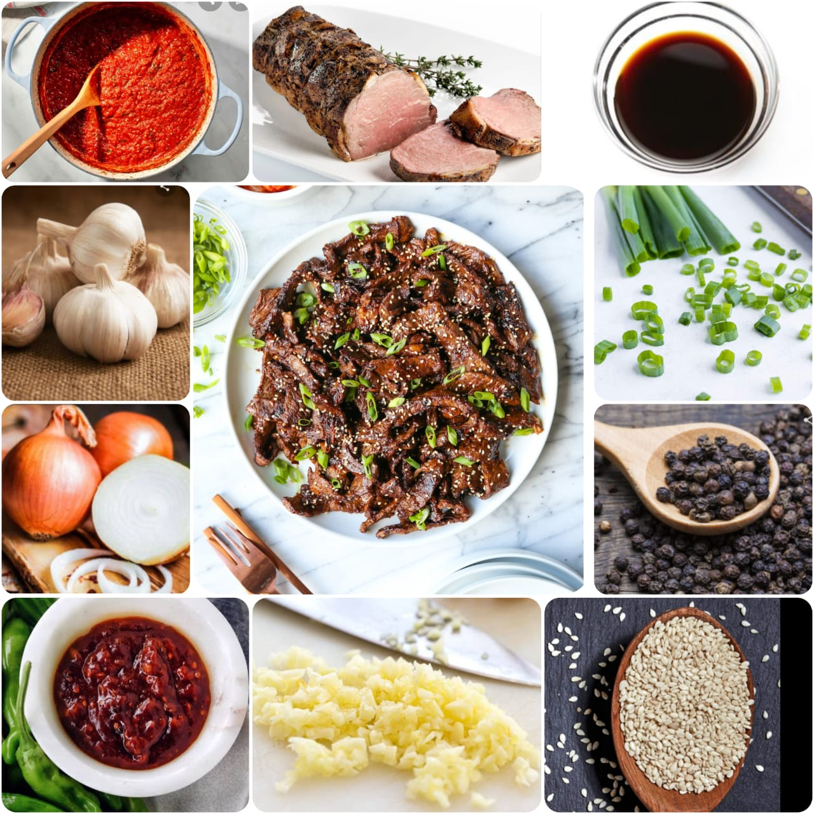

Bulgogi
Home
Korean-style grilled or roasted dish) made of thin, marinated slices of meat, most commonly beef, grilled on a barbecue or on a stove-top griddle. It is also often stir-fried in a pan in home cooking. Sirloin, rib eye or brisket are frequently used cuts of beef for the dish. The dish originated from northern areas of the Korean Peninsula, but is a very popular dish in South Korea, where it can be found anywhere from upscale restaurants to local supermarkets as pan-ready kits.
Ingredients
1/4 Pear,grated
1 garlic clove,grated
2 Table spoons of soy sauce
1 tablespoon grated peeled ginger
1 tablespoon light brown sugar
1 tablespoon toasted sesame oil
pound boneless sliced beef
2 tablespoons vegetable oil, divided
salt
sliced scallions
toasted sesame seeds
2 teaspoon Onions(fried)

Nutrition Facts
Calories 219
Total Fat 13.0g
Cholesterol 76mg
Sodium 1143mg
Total Carbohydrate 12.0g
Vitamin C 4.1%
Vitamin A 1.2%
Procedure
Take a mixing bowl
Add Grated pear, grated garlic clove, 2 tablesoops of soy sauce, 2 teaspoons of gochujang paste, 1 tablespoon of grated peeled ginger,1 tablespoon of light brown sugar, 1 tablespoon of toasted sesameoil, salt to your taste, pepper to your taste, toasted sesameseeds.
mix them all well
Now add the thinly sliced beef piecesand make sure each slice is coated with the paste properly.
Cover it and reffrigerate for a day.
Tne next day take it out and let it sit for 30 mins.
oil the griller and grill the marinated beef.
serve this to a bowl and garnish with thinly sliced spring onions on top for pop of color and add some pepper and red chilli flakes as per your taste.
Serve hot with kimchi or rice or can also be eaten alone.
Expert Guide
Back ←
Scroll to Top ↑